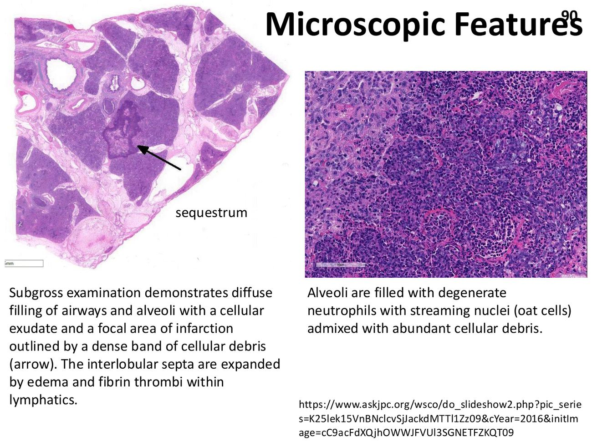

大方向與重點摘要
- 這章在講什麼
- 〈Bovine Infectious Disease〉講義第二部分 Respiratory Diseases：牛呼吸道疾病複合症（bovine respiratory disease, BRD）的定義與病因，接著逐一講病毒（牛疱疹病毒第 1 型 BHV-1／牛傳染性鼻氣管炎 IBR、牛呼吸道融合病毒 BRSV、牛副流感病毒第 3 型 BPIV-3）與細菌（Mannheimia haemolytica、Pasteurella multocida），最後是 BRD 的控制。腸胃道疾病見牛傳染病（一），其他疾病見牛傳染病（三）。
- 為什麼重要
- BRD 又稱運輸熱（shipping fever），是剛離乳、剛運到肥育場的牛最常見的疾病；發病率可達 50%、病死率可達 10%，而且病毒感染幾乎都會讓細菌性肺炎變得更嚴重。
- 這章要抓的重點
-
- BRD：別名運輸熱、未分化熱、地方性仔牛肺炎；多因子；高燒 40–41°C；剛離乳的年輕牛最易感；與運輸與混群最相關。
- 病因三類：病毒（BHV-1、BRSV、PI-3、BVDV、BCoV、BAV）＋細菌（M. haemolytica、P. multocida、Histophilus somni、Mycoplasma bovis）＋環境與管理 → 緊迫。
- BHV-1：IBR；一個血清型、三個亞型（1.1 呼吸、1.2 生殖、1.3 腦炎 → 改稱 BHV-5）；臨床病型取決於感染途徑而非亞型；台灣 1997–1998 年抗體陽性 71.6%。
- BHV-1 表現：多在6 月齡以後（移行抗體下降）；高燒達 42°C、紅鼻（red nose）、鼻分泌物、結膜炎；流產多在懷孕 6–8 個月；會潛伏；非經口 MLV 疫苗對未免疫懷孕牛可能致流產。
- BHV-1 與肺炎：破壞肺泡巨噬細胞、改變表面張力素、增強 M. haemolytica 白血球毒素與白血球結合 → 放大 M. haemolytica 的傷害。
- BRSV：Pneumoviridae；6 月齡以下仔牛病毒性肺炎；與人 RSV 相關；再感染常見、冷季；IgE 與肥大細胞去顆粒 → 致死性的陣發性呼吸窘迫症候群（PRDS）；病理特徵融合細胞。
- BPIV-3：通常輕微自限；臨床意義是引發續發性細菌性肺炎；感染肺泡巨噬細胞、支氣管收縮。
- M. haemolytica：鼻咽共生菌；血清型 1；白血球毒素（RTX）；燕麥細胞（oat cells）、梗塞與纖維素性壞死性肺炎。
- P. multocida：A3（其次 D3）；病變相似但血管傷害較少、沒有燕麥細胞；與地方性仔牛肺炎相關。
- 容易混淆
- BHV-1.3 已改名 BHV-5（腦炎型）。BRSV vs BPIV-3：兩者病理相似，但 BPIV-3 症狀較輕、融合細胞較少，1 週內恢復；BRSV 可造成致死的間質性肺炎與 PRDS。M. haemolytica vs P. multocida：前者有白血球毒素 → 燕麥細胞、梗塞、纖維素性壞死；後者血管傷害少、無燕麥細胞。MLV 疫苗與懷孕牛：BHV-1 非經口 MLV 可能致流產（BVD 的 MLV 也不建議用於懷孕牛）。
- 考試可能怎麼問
（推測） - BRD 別名、定義與危險因子；病毒與細菌病原清單；BHV-1 亞型與 BHV-5；IBR 的臨床病型；BHV-1 為何加重 M. haemolytica 肺炎；IBR 流產月齡與機轉；BRSV 分類、PRDS 機轉；BPIV-3 的臨床意義；白血球毒素與燕麥細胞；P. multocida 血清型；BRD 預防（預先調理、運輸前 2–3 週接種）。
內容以老師講義為主體。標示「補充」的段落（含「讀書補充Note」）是講義以外的延伸；標示「推測」的是依講義強調處推測的出題方向，不是考古題。考試範圍以老師上課為準。圖片為老師講義截圖（部分照片原出處為文獻或講義所附網址）。
離乳、運輸、混群、擁擠、溫度、灰塵、通風
BHV-1、BRSV、PI-3、BVDV
巨噬細胞、纖毛、表面張力素
M. haemolytica、P. multocida
牛呼吸道疾病複合症 Bovine Respiratory Disease (BRD)
BRD 不是單一病原，而是緊迫、病毒、細菌三者疊加的結果。
定義與流行病學（p.63–64）必考
- 別名：運輸熱（shipping fever）、未分化熱（undifferentiated fever）；年輕乳牛仔牛稱地方性仔牛肺炎（enzootic calf pneumonia）。
- 多因子病因的複雜呼吸道疾病；臨床為呼吸困難、咳嗽、鼻分泌物、不同程度沉鬱、厭食、高燒 40–41°C。
- 所有年齡都會發生，但年輕、快速成長的牛，尤其剛離乳的仔牛最易感。
- 最常與剛離乳仔牛大量運輸、集中到肥育場有關。
- 發病率可達 50%、病死率可達 10%，強烈取決於牧場的危險因子。
病因（p.65）必考
| 病毒 | 細菌 | 其他 |
|---|---|---|
| BHV-1（＝IBR）、BRSV、PI-3V、BVDV、BCoV、牛腺病毒（BAV） | Mannheimia haemolytica、Pasteurella multocida、Histophilus somni、Mycoplasma spp.（M. bovis） | 環境（離乳、運輸、混群、擁擠、溫度、灰塵、通風）、免疫、疫苗計畫、管理 → 緊迫 |
牛疱疹病毒第 1 型 Bovine Herpesvirus-1 (BHV-1／IBR)
一個病毒、很多病型：呼吸、結膜、生殖、流產、腦炎、乳房炎、新生仔牛全身性感染，還會潛伏。
病原（p.66）必考
- 又稱牛傳染性鼻氣管炎（infectious bovine rhinotracheitis, IBR）病毒；牛群中廣泛存在。
- 台灣（1997–1998）：71.6%（2003/2796）IBR 抗體陽性，11.6%（325/2796）可疑。
- 一個血清型，數個亞型：BHV-1.1＝呼吸型、BHV-1.2＝生殖型、
BHV-1.3＝腦炎型→ 改分類為 BHV-5。 - 臨床病型取決於感染途徑，多於取決於亞型。
- 經含病毒的分泌物或氣膠接觸傳播。
發病率與死亡率（p.67）必考
| 乳牛場 | 肥育場 | |
|---|---|---|
| 發病率 | 8% | 20–30%；未免疫牛群罕見達 100% |
| 死亡率 | 3% | 依續發細菌感染嚴重度而異 |
| 原因 | 肥育場經常引進易感動物到地方性流行的環境，所以較高 | |
新生仔牛全身性感染：死亡率 100%。
臨床病型（p.68）必考
- 呼吸道疾病（IBR、易發肺炎）
- 結膜炎（可與 IBR 同時或單獨）
- 生殖道疾病：傳染性膿疱性外陰陰道炎（IPV）、龜頭包皮炎
- 繁殖失敗與流產
- 腦炎
- 乳房炎
- 新生仔牛全身性疾病
- 潛伏（latency）
呼吸型 IBR 的表現（p.69）必考
- 嚴重度取決於病毒株、年齡、環境。
- 有喝初乳的仔牛，臨床病多在 6 月齡後出現（初乳 IgG 下降）。
- 高燒（可達 42°C）、厭食、咳嗽、大量流涎、鼻分泌物（有時伴口鼻潰瘍）、結膜炎與流淚、鼻孔發炎（紅鼻 red nose）；喉部被膿性物質堵塞時呼吸困難。
為什麼 BHV-1 會加重肺炎（p.70）必考
- BHV-1 損害肺泡巨噬細胞功能 → M. haemolytica 在肺中持續存在、增殖。
- 改變肺泡磷脂組成 → 影響表面張力素功能、削弱肺部防禦。
- 影響周邊血液嗜中性球，增強 M. haemolytica 白血球毒素（主要毒力因子）與支氣管肺泡白血球的結合並增加殺傷。
淨效應：BHV-1 感染放大了 M. haemolytica 在肺中的傷害。
繁殖失敗與流產（p.71–72）必考
- 常見後遺症，出現在臨床病或對未免疫懷孕牛非經口接種 MLV 疫苗後數週。
- 流產最常見於懷孕 6–8 個月的母牛。
- 流產率通常低，但在未免疫牛群可達 60%。
- 機轉：周邊血液白血球帶著 BHV-1 → 胎盤 → 胎兒 → 流產（48 小時內）。
- 用受感染的精液授精後可出現子宮內膜炎、受胎率差、發情週期縮短。
預防與控制（p.73–74）必考
- 在自然暴露前至少 10 天接種疫苗，可預防流產並保護呼吸道疾病。
- 有多種活減毒與不活化 BHV-1 疫苗。
- 非經口 MLV 疫苗可能致流產，不能用於未免疫的懷孕牛。
- 部分歐洲國家用 DIVA 策略（標記疫苗）根除 IBR。
- 抗菌藥物用於預防續發細菌感染。
補充：DIVA（differentiating infected from vaccinated animals）：標記疫苗缺少 gE 蛋白，接種牛只有其他抗體、沒有抗 gE 抗體；檢測抗 gE 抗體陽性就代表野外感染。疫苗途徑依 p.74 表：i.m.（肌肉）、s.c.（皮下）、i.n.（鼻內）。
牛呼吸道融合病毒 Bovine Respiratory Syncytial Virus (BRSV)
6 月齡以下仔牛的病毒性肺炎，冷季、再感染常見；少數會變成致命的過敏型呼吸窘迫。
病原與流行病學（p.75–76）必考
- 主要造成 6 月齡以下仔牛的病毒性肺炎，也見於一歲牛與成牛。
- Pneumoviridae 科、Orthopneumovirus 屬。
- 與人呼吸道融合病毒（HRSV）在基因與抗原上相關。
- 全球分布；台灣（1997–1998）ELISA 陽性 61.9%（468/756）。
- 再感染常見；疾病主要發生在冷季；一個血清型；接觸／氣膠傳播。
致病機轉（p.77）必考
- 在呼吸道纖毛上皮細胞與第二型肺泡細胞複製。
- 造成氣道阻塞與過度反應，可持續到暴露後 30 天。
- 病毒專一性 IgE 可能參與重症（過敏反應）。
- RSV 誘發肺部大量肥大細胞去顆粒 → 嚴重、高致死的「惡性」型：陣發性呼吸窘迫症候群（paroxystic respiratory distress syndrome, PRDS）。
發病率、死亡率與臨床（p.78–79）必考
- 爆發時發病率高（30–50% 以上）；死亡率通常低，但可達 20%。
- 原發 BRSV 的特徵：一群動物突然爆發急性呼吸道疾病；年紀較大或再感染者症狀輕。
- 症狀：發燒 40–42°C、沉鬱、採食量與乳量下降、呼吸速率增加、咳嗽、眼鼻分泌物 → 通常 1–2 週內恢復。
- 續發細菌感染常見；少數發展成致死性間質性肺炎。
病理（p.80–82）理解
補充：小葉間隔氣腫是 BRSV 嚴重病例常見的肉眼特徵，配合融合細胞可與細菌性肺炎區分。
預防與控制（p.83）必考
- 難以控制；抗菌藥物預防續發細菌感染；減少緊迫。
- 在風險期前接種；MLV 或死毒都有（多價產品）；但效果有爭議。
- 新進牛隔離數週並確認已接種再混群。
- 確保仔牛從已接種的母牛得到足夠初乳。
牛副流感病毒第 3 型 Bovine Parainfluenza Virus-3 (BPIV-3)
自己通常不嚴重，重要性在於替細菌開門。
病原（p.84）必考
- 全球分布；主要造成亞臨床至輕度、自限性疾病。
- 臨床意義：作為引發續發性細菌性肺炎的觸發因子。
- Orthoparamyxoviridae 科、Respirovirus 屬（講義拼作 Othoparamyxoviridae）。
- 與人副流感病毒第 3 型在基因與抗原上相關。
- 宿主：牛、綿羊、山羊、野生反芻獸、人與非人靈長類；分泌物／氣膠傳播。
致病機轉（p.85）必考
PAM 吞噬力↓、發炎反應↑
臨床與病理（p.86–87）必考
- 與 BRSV 相似，通常更輕：發燒、眼鼻分泌物、沉鬱、呼吸速率增加、咳嗽 → 通常 1 週內恢復。
- 病理與 BRSV 相似，融合細胞通常較少。
Mannheimia haemolytica
平常住在鼻咽的共生菌，牛一緊迫就往下長，用白血球毒素把肺變成纖維素性壞死。
病原（p.88）必考
- 革蘭氏陰性球桿菌，巴斯德氏菌科（Pasteurellaceae）。
- 免疫正常反芻獸鼻咽與扁桃腺隱窩的共生菌。
- 12 個血清型（莢膜多醣抗原）；未免疫或緊迫動物的肺炎肺臟中常分離到血清型 1。
- 危險因子：緊迫、寒冷、共同感染 → 細菌過度增殖，隨氣膠吸入氣管與肺。
毒力因子與病變（p.89–90）必考
- 毒力因子：白血球毒素（leukotoxin）、脂多醣（LPS）、黏附素、莢膜、外膜蛋白、各種蛋白酶。
- 白血球毒素：RTX（repeats in toxin）家族的穿孔型細胞溶解素；低濃度招募並活化白血球，高濃度溶解白血球與血小板。
- 被招募的嗜中性球殺菌無效，反而傷害內皮細胞 → 梗塞。
- 溶解壞死的白血球核染色質呈流線狀 → 燕麥細胞（oat cells）。
- 牛、綿羊、山羊纖維素性壞死性肺炎與胸膜肺炎的常見原因。

Pasteurella multocida
和 Mannheimia 同科、病變相似，但沒有白血球毒素，所以血管傷害少、沒有燕麥細胞。
病原與病變（p.91–92）必考
- 革蘭氏陰性球桿菌，巴斯德氏菌科。
- 牛上呼吸道正常菌、下呼吸道伺機性病原。
- 5 個莢膜血清群（A、B、D、E、F）與 16 個菌體血清型。
- A3（其次 D3）是牛下呼吸道感染的主要病原。
- 肺病變相似，但血管傷害較少、沒有燕麥細胞。
- 常與地方性仔牛肺炎（enzootic calf pneumonia）相關。
補充：P. multocida 血清群 B 與 E 造成的是另一個病──出血性敗血症（hemorrhagic septicemia），主要在亞洲與非洲的牛與水牛，不在本講義範圍。
BRD 的控制與預防 Control & Prevention
控制 BRD 的核心是減少緊迫，並在緊迫來之前把免疫做好。
減少緊迫（p.93）必考
- 縮短運輸時間。
- 離乳仔牛在運輸前做預先調理（precondition）。
- 到場時做入場處理（arrival processing）：例如接種疫苗、群體預防性投藥（metaphylactics，例如長效抗菌藥）。
- 理想上 BRD 相關病原的疫苗應在運輸前 2–3 週接種，到肥育場時可再補一次。
補充：preconditioning 通常指離乳後在原牧場先養一段時間、先接種疫苗、先學會吃飼料槽與喝水，再運到肥育場；metaphylaxis 是對高風險群體在發病前一起給藥，不同於個別治療。
鑑別比較 Comparison
三個病毒、兩個細菌各放一張表。
三種呼吸道病毒必考
| BHV-1（IBR） | BRSV | BPIV-3 | |
|---|---|---|---|
| 分類 | 疱疹病毒；1 血清型、亞型 1.1／1.2（1.3 → BHV-5） | Pneumoviridae、Orthopneumovirus；1 血清型 | Orthoparamyxoviridae、Respirovirus |
| 台灣盛行率 | 抗體陽性 71.6% | ELISA 陽性 61.9% | — |
| 好發 | 6 月齡以後（初乳 IgG 下降） | 6 月齡以下仔牛；冷季、再感染 | — |
| 發病／死亡 | 乳牛 8%／3%；肥育場 20–30%；新生仔牛全身性 100% 死 | 30–50%／通常低，可達 20% | 輕微自限 |
| 特徵 | 紅鼻、流涎、結膜炎；流產（6–8 月）；生殖道 IPV；潛伏 | IgE、肥大細胞 → PRDS；融合細胞；間質性肺炎 | PAM 受損、支氣管收縮；融合細胞較少 |
| 病程 | — | 1–2 週 | 1 週 |
| 疫苗 | 活減毒、不活化；非經口 MLV 不可用於未免疫懷孕牛；DIVA | MLV、死毒（多價），效果有爭議 | — |
兩種巴斯德氏菌科必考
| M. haemolytica | P. multocida | |
|---|---|---|
| 平常 | 鼻咽、扁桃腺隱窩共生 | 上呼吸道正常菌 |
| 血清型 | 12 型；血清型 1 | 莢膜 A、B、D、E、F；A3（其次 D3） |
| 關鍵毒力 | 白血球毒素（RTX） | — |
| 病變 | 纖維素性壞死性肺炎、胸膜肺炎、梗塞、燕麥細胞 | 相似，但血管傷害少、無燕麥細胞 |
| 常見情境 | 運輸熱、肥育場 | 地方性仔牛肺炎 |
考試方向（推測）
以下是依講義強調的內容推測的出題方向，不是考古題，考試範圍以老師上課為準。
| 可能考法 | 答題重點 |
|---|---|
| BRD 別名與定義 | shipping fever、undifferentiated fever、enzootic calf pneumonia；多因子；40–41°C；剛離乳最易感；發病 ≤ 50%、病死 ≤ 10% |
| BRD 病因 | 病毒：BHV-1、BRSV、PI-3、BVDV、BCoV、BAV；細菌：M. haemolytica、P. multocida、H. somni、M. bovis；緊迫 |
| BHV-1 亞型 | 1.1 呼吸、1.2 生殖、1.3 腦炎 → BHV-5；病型取決於感染途徑 |
| IBR 臨床 | 6 月齡後；42°C、紅鼻、流涎、鼻分泌物、結膜炎；IPV、龜頭包皮炎、流產、腦炎、乳房炎、潛伏 |
| BHV-1 加重肺炎 | 巨噬細胞功能↓、表面張力素改變、增強白血球毒素結合 |
| IBR 流產 | 懷孕 6–8 個月；未免疫牛群可達 60%；白血球 → 胎盤 → 胎兒，48 h 內；非經口 MLV 可致流產 |
| BRSV | Pneumoviridae；6 月齡以下；IgE、肥大細胞 → PRDS；融合細胞；發病 30–50%、死亡可達 20% |
| BPIV-3 | 輕微自限；觸發續發細菌性肺炎；PAM 受損、支氣管收縮 |
| 白血球毒素 | RTX 穿孔型細胞溶解素；低濃度招募活化、高濃度溶解；內皮傷害 → 梗塞；燕麥細胞 |
| P. multocida | A3（D3）；無燕麥細胞；地方性仔牛肺炎 |
| BRD 控制 | 縮短運輸、預先調理、入場處理（疫苗、metaphylaxis）、運輸前 2–3 週接種 |
練習題 Practice Quiz
縮短運輸時間；離乳仔牛運輸前預先調理；到場做入場處理（疫苗、長效抗菌藥等群體預防投藥）；BRD 病原疫苗理想上在運輸前 2–3 週接種，到場可再補強（p.93）。